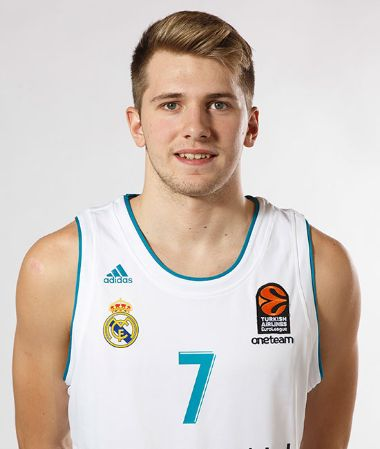
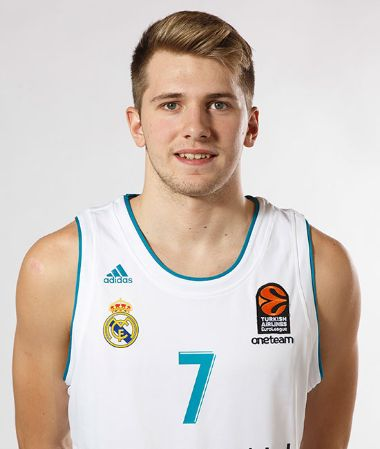
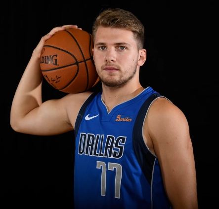
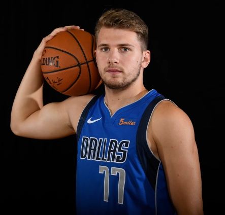
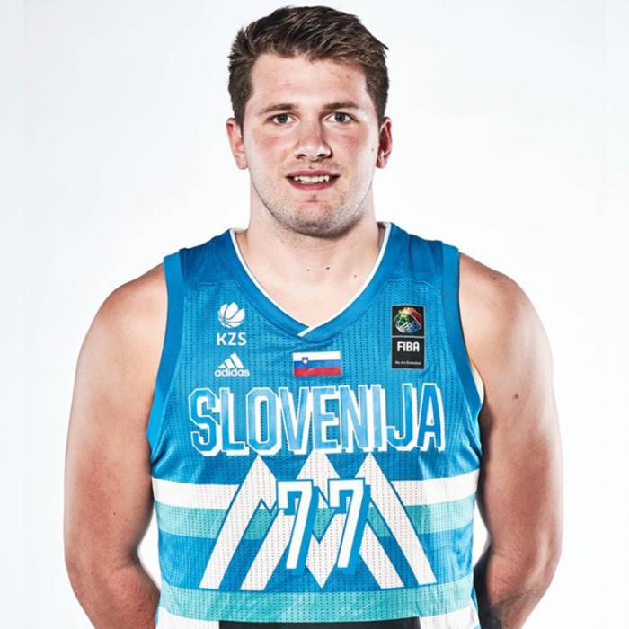
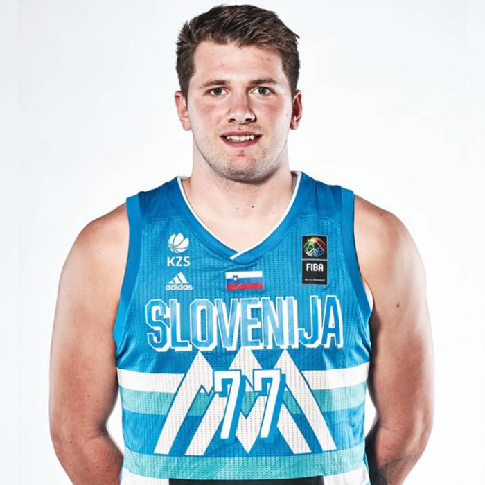

Luka Dončić (Liubliana, 28 de febrero de 1999) es un jugador de baloncesto esloveno, que pertenece a la plantilla de los Dallas Mavericks de la NBA. Con 2,01 metros de altura juega en la posición de base, pero puede jugar tanto de escolta como de alero. En abril de 2015 se convirtió en el jugador más joven del Real Madrid Baloncesto en debutar en la Liga ACB (a la edad de 16 años y 2 meses), y el tercero más joven en la historia de la competición. Sus actuaciones a tan temprana edad le situaron rápidamente como uno de los jugadores emergentes más importantes de su época y de Europa, postulándose como uno de los primeros elegidos del draft NBA 2018 según los portales especializados. Fue elegido en la tercera posición del draft por Atlanta Hawks, quienes traspasaron sus derechos inmediatamente a los Dallas Mavericks. Es el sexto europeo elegido en el top-3 en toda la historia de la NBA.13. Y al término de la temporada fue nombrado rookie del año. Su padre es Saša Dončić, exjugador de baloncesto de origen serbio que llegó a competir con la selección eslovena, y su madre es Mirjam Poterbin, exmodelo y bailarina de baile deportivo eslovena que fue campeona del mundo con el grupo Urska. Luka comenzó a practicar a los seis años baloncesto, fútbol, judo y balonmano en la escuela primaria Miran Jarc de su ciudad natal, Liubliana, donde coincidió con el portero español Nacho Barriopedro, que ejercía de profesor invitado de educación física y que le enfocó hacia el deporte de la canasta. Tras decantarse por el baloncesto entró a formar parte de las categorías inferiores del Košarkarski klub Union Olimpija.
Real Madrid


Dallas Mavericks


Eslovenia

